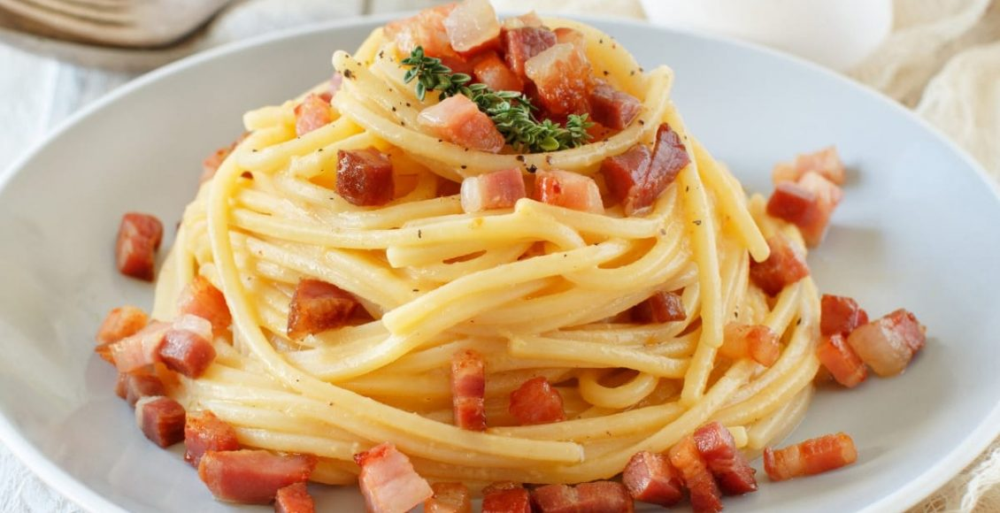

Uma receita que faz sucesso na gastronomia: massa no estilo Caccio Peppe. Nessa versão, acrescentamos camarões frescos e azeite trufado. Para você aprender dicas de como fazer e se deliciar a dois!
Desafiadora à primeira vista, a receita de macarrão à carbonara vai ficando fácil com a prática. É rápida, leva poucos ingredientes — queijo parmesão ou pecorino, bacon ou guanciale (bochecha de porco curada), ovos e pimenta-do-reino — só que exige atenção total. ...
A receita de molho branco pode ser utilizada como curinga na sua cozinha, deixando a comida mais deliciosa e surpreendendo sua família. Simples e fácil de fazer, o molho branco fica pronto rápido e leva poucos ingredientes: creme de leite, leite, queijo ralado, amido de milho, margarina, cebola, pimenta-do-reino e sal.